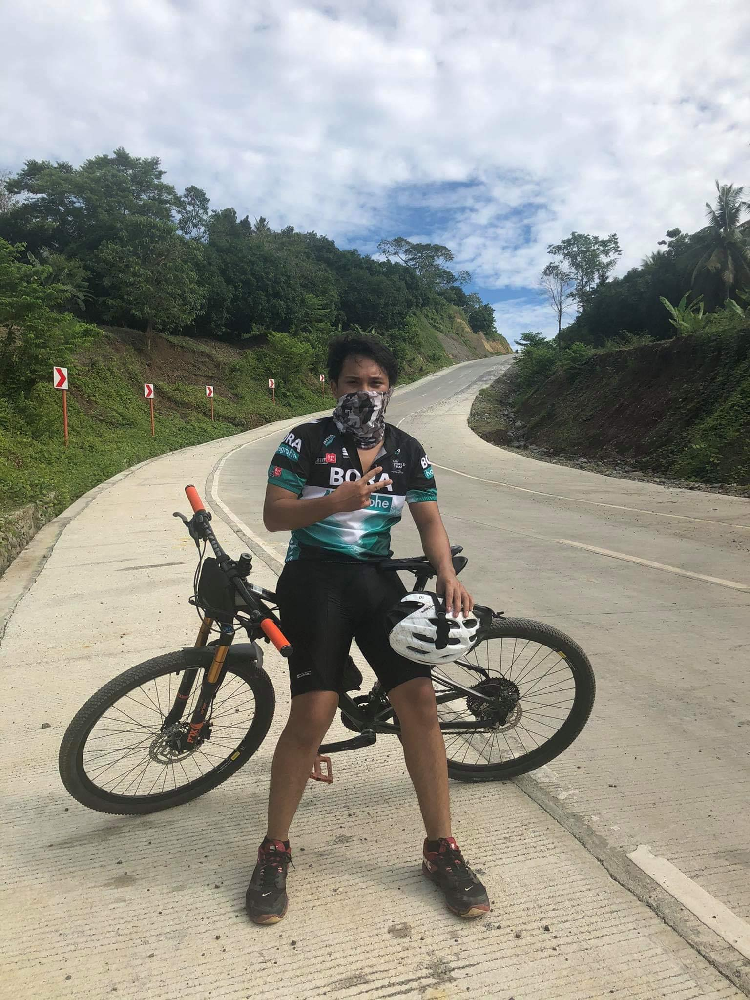
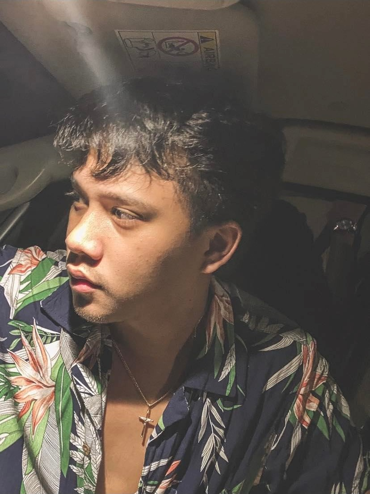

Hello! My name is Adrian Jose P. Cid and I'm a first-year irregular BS-IS student, I was born and raised in Davao City and I’m going to share everything about me. Let us start with talent, when it comes with talent, I know how to play drums and edit videos, cinematic videos to be specific. Next, I’m going to share my hobbies. So, my hobbies are biking, playing basketball, filming random stuff, playing online games, road trips, and playing with my pets. During my vacant time, I would prefer biking or playing video games with my friends, there is also a time that I do household chores and play with my pets after I also often walk alone at night especially when I think of solutions for my problems in life. I dreamed of being a mechanical engineer But I decided to switch to an information system because I hate math, I’m also the kind of guy that loves cars so much that I wasted a lot of money buying hot wheels or any Diecast cars, I started to love cars from my uncle who owns his own auto repair shop business and because of that, I'm planning to study in an automotive program in tesda as my second profession after I graduate information systems. The last thing that I’m going to share is my dislikes in life. When it comes to food, I don't like liver meat and balut. Next dislike is Math and physics subject, I have hated computing ever since I was a kid. Next, I hate people who always flex things and have a moody attitude. Lastly, I don't like someone smoking near me.
 I have a huge number of goals in life and I'm going to share them one by one. So, my first goal is to finish my information systems course and my automotive program for me to have two professions because I know having 2 or more professions is useful when I go abroad, my second goal is to be a successful data analyst or web programmer for me to be rich, my third goal in life is to have my very own auto repair shop business for me to continue my passion for cars, my fourth goal in life is to build a shelter for homeless animals where they can stay temporarily until they get adopted, my fifth goal is to set up my tuner car and join any legal races held here in the Philippines, and for my final goal, when I get old I want to live my remaining time peacefully with my family. 10 years from now I can see myself working in Australia as a data analyst or a web programmer in a big company earning a lot of money good enough to support my family and dreams.